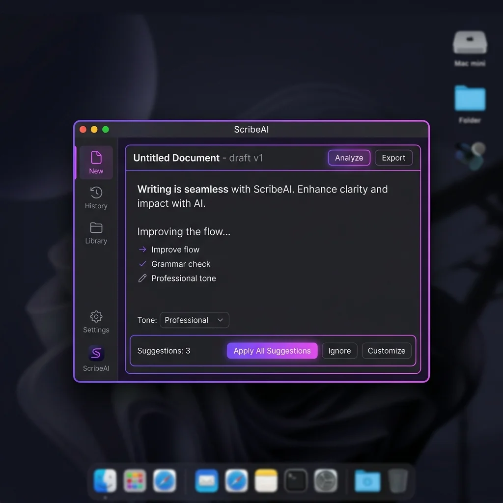

Rewrite anything on your Mac in a single keystroke.
ScribeAI is a free, open-source AI writing assistant for macOS that works offline. Select text in any app, press ⌥⌘S, and it hands back a cleaner draft. The model runs on your own Mac, so your words never leave the machine.
just wanted to check in follow up
about the report. lets let’s
get it done soon finish it this week
Just wanted to follow up about the report. Let’s finish it this week.
What can ScribeAI do?
One shortcut, five tones, and a model that lives on your Mac. ScribeAI handles the sentence you are stuck on and puts it back where you were typing.
-
Runs offline
WebGPU executes a quantized Qwen 1.5B model on your own GPU, peaking around 1.6GB of VRAM. Typed text stays on the machine.
-
Works in every app
Highlight a passage in Slack, Notes, Mail or a browser, press
⌥⌘Sand the overlay appears over whatever you were doing. -
Keeps your names
Proper nouns are indexed before rewriting and checked afterwards, so Rohith does not quietly become Rohit.
-
Five tones, one custom line
Professional, casual, improved, concise or expanded, plus a free-text instruction for anything the presets do not cover.
-
Bring your own key
No WebGPU on your machine? Add a Gemini or OpenAI key and requests go straight to that provider, billed at their rates.
-
Updates itself
New builds arrive quietly through GitHub Releases. No account, no subscription, no prompt to upgrade.

Nothing you write leaves this computer.
Most writing tools forward every keystroke to a server. ScribeAI does the work in GPU memory on your Mac, which keeps contracts, client notes and anything else you paste exactly where you put it.
- Local execution. The default path uses your own hardware and no central database.
- No telemetry. The client ships without trackers, tracking cookies or analytics servers.
- Direct API calls. If you add a provider key, the request travels from your Mac to that provider and back.
- Auditable. The source is public. Read it, fork it, build it yourself.
Try the rewriter
Pick a draft, choose a tone, and watch the edit. This runs in your browser with a small demo vocabulary; the desktop app runs the real model.
I write Rohit, but the AI writes Rihoy.
How to install ScribeAI on your Mac
No account and nothing to configure. From download to first rewrite takes about a minute.
-
Download the disk image
The
.dmgis roughly 90MB and runs on Apple silicon Macs. -
Drag it to Applications
Open the downloaded image and move ScribeAI into Applications, then eject.
-
Approve the first launch
Right-click the app, choose Open, then confirm. You only do this once.
-
Select text and write
Highlight anything, press ⌥⌘S and the overlay opens.
First launch on macOS
Because ScribeAI is distributed outside the App Store, macOS shows a security warning the first time you open it. That is normal for independent apps. Either method clears it once and never asks again.
System requirements
- macOS
- 12.0 or later
- Chip
- M1 or newer
- Memory
- 8GB minimum
Offline model
- Weights
- Qwen2.5 1.5B Instruct, 4-bit
- Peak VRAM
- 1.6GB
Model: Qwen2.5-1.5B-Instruct (Apache-2.0), quantized to 4-bit by MLC WebLLM. Weights download once (~390MB) and are cached on your Mac.
Licence
- Price
- Free
- Source
- MIT, public repo
- Version
- 1.0.1
Frequently asked questions
The things people ask before downloading.
Does ScribeAI work offline?
How does the global shortcut work?
What does the offline model need from my Mac?
Is ScribeAI free?
How is ScribeAI different from Grammarly or other cloud assistants?
Cloud assistants such as Grammarly or QuillBot send every checked passage to their servers and charge a subscription. ScribeAI runs the model on your own GPU, costs nothing, works system-wide in any Mac app from one keystroke, and keeps working offline.
| How they differ | ScribeAI | Cloud assistants |
|---|---|---|
| Where the model runs | Your Mac (WebGPU) | Their servers |
| Price | Free, MIT open source | Paid subscription |
| Text leaves your device | No | Yes, on every check |
| Works in any Mac app | Yes, system-wide ⌥⌘S | Usually browser or editor plugins |
| Works offline | Yes | No |
| Account required | No | Usually |
Comparison reflects how Grammarly, QuillBot and similar services were typically architected as of October 2026. Check each vendor's current privacy policy before you decide.
Why does the rewrite leave names alone?
Why does the downloaded file sort under 1984 in Downloads?
Last-Modified header and falls back to
24 January 1984, the launch date of the original Macintosh. The file
itself is intact.
Take the first draft off your plate.
Download the Mac app, press ⌥⌘S on something you were about to rewrite by hand, and see what comes back.